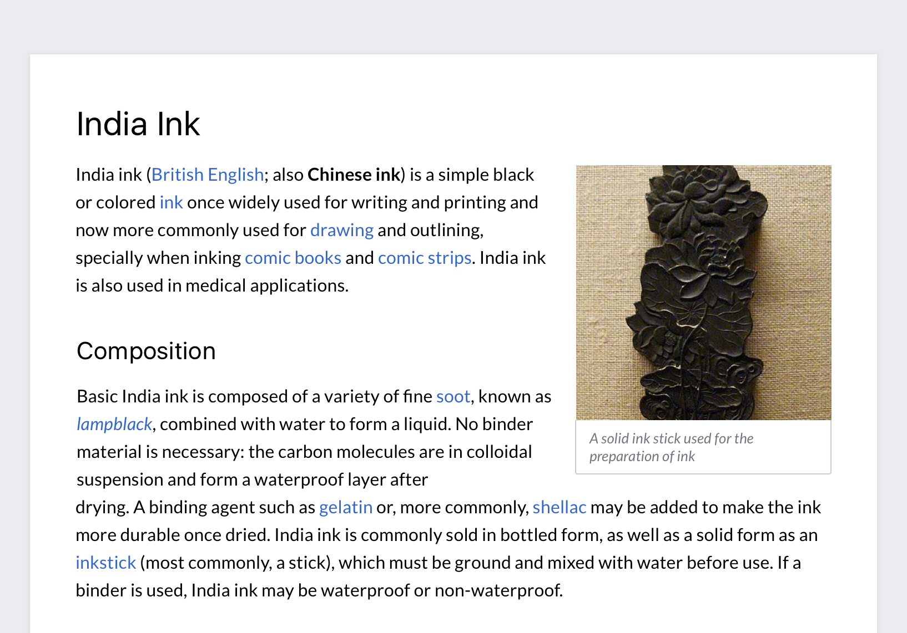

Typography
Wikimedia projects rely on writing and reading. Typography is a key component of their design. Consider the typeface, size, style, and spacing of your text to achieve good readability. Our typographic choices make our content accessible, present it in a neutral way, and convey its reliability.
Readability
Content should be readable by everyone, regardless of their circumstances. Color blindness or the sun on a device's screen should not be barriers to access.
Contrast
When using text, make sure that it provides enough contrast to be read comfortably. Check the contrast between the colors used for the text and its background. Provide at least level AA sufficient contrast (4.5:1). The color palette provides the contrast levels for pure white and black surfaces, but you need to ensure the contrast on other combinations.
Tracking and leading
Text spacing. How text is placed in space can affect its readability. Follow these considerations for text paragraphs:
- Line length for reading in English is ideally no longer than 75 characters.
- Line height should be 1.6 times the size of the font used.
Dynamic text
Content will be available in multiple languages, and text length will vary for pieces of content across languages. Avoid designing interfaces that depend on certain expectations about text length.
Here are few ways to tackle dynamic text:
- Uncrowded user interface. Design with an eye for simplicity. Consider reducing the number of elements to ensure the remaining ones have enough room.
- Dynamic layout. Make containers expandable, so that they can fit the content.
- Dynamic text. Adjust the size depending on the content. Use a smaller font-size for long content.
- Clipping. Clip the text with ellipsis, only if there is no risk of missing important information or the complete information is reachable through a clear alternative means.
Typefaces
Text can be read in multiple languages on different devices. We recommend using the fonts already available on each device and operating system. This keeps the experience simple and consistent with the platform conventions and ensures widest language script support as provided by the operating systems themselves. The following sections provides a selection criteria for choosing appropriate typefaces, and how to apply it on different platforms.
Font selection criteria
To select an appropriate font family for a given language script or device, follow these criteria:
- Readability. Fonts with a bigger x-height and open shapes are preferred.
- Neutral aspect. The font should work with many different kinds of content without adding a particular voice to it.
- Simple shapes. Fonts with less complex shapes work better at smaller sizes, on low-resolution devices, and reduce printing costs.
- Open. Open source fonts are preferred to align with the open knowledge they deliver.
Platform-specific fonts
We recommend relying on the operating system's default sans-serif typeface.
Most platforms have plenty of options for supporting latin-based languages, where the serif concept makes sense. Among the different serif system fonts we recommend Georgia (present in many operating systems).
Below you can see an example CSS code to support the default system fonts:
/**
* System font stack for sans-serif fonts
*
* `-apple-system` ('San Francisco' font) – Support Safari 9+ macOS and iOS, Firefox macOS
* `BlinkMacSystemFont` ('San Francisco' font) – Chrome 48+ macOS and iOS
* `Segoe UI` – Windows Vista & newer
* `Roboto` – Android 4.0+
* `Lato` – Wikimedia Design choice, OFL licensed
* `Helvetica, Arial, sans-serif` – (Generic) Web fallback
* Note that standard `system-ui` value has resulted in unresolved side-effects in certain OS/language combinations as of now and is therefore not included.
*/
font-family: -apple-system, BlinkMacSystemFont, 'Segoe UI', Roboto, Lato, Helvetica, Arial, sans-serif;
Fonts are not always available for all scripts or all operating systems. For example, Helvetica does not support the Korean script. Using the default font on the user device for Korean text seems the safest choice, unless there is a better candidate based on the selection criteria described above, and selected by someone familiar with the script.
Platform-neutral fonts
In some cases you may be designing in a neutral-platform context. For example, creating mockups to convey a general interface concept targeting multiple platforms, or contributing to this style guide. In those cases, it is convenient to select free fonts that follow above criteria. We recommend Charter (supported by the Charis SIL font implementation), and Lato, when available in your language. As well as the Noto font family for extended language support.- Charter is a serif typeface designed by Matthew Carter in 1987. Charter has a simplified and clean structure that works well, even on low resolution displays. Although Bitstream Charter is the original implementation for Charter, we recommend using Charis SIL since it provides a wider Unicode support.
- Lato is a sans-serif typeface designed by Łukasz Dziedzic in 2010. Lato provides good readability even at small sizes.
- The Noto family provides a great coverage of languages, providing good alternatives for both serif and sans-serif typefaces.
These fonts are provided as a reference, but you may select other free fonts using similar criteria when the recommended ones are not available in your context.
Use of styles
The recommended styles are intended to optimize readability of Wikipedia’s dense encyclopedic content.
In our guidelines we use scale-independent pixels (sp). They can result in a different number of actual pixels in the user screen due to screen density or user preferences. A 16 sp text is rendered as 16 px in a 1x device at standard zoom level, but it becomes 21 px in a 2x device (or when zoomed 200% on a 1x device).
Common text styles are based on the defined scale to clearly communicate the content hierarchy.
- Heading 1
-
Charter Regular 32 sp
- Heading 2
-
System sans-serif 600 / Lato Bold, 24 sp
- Heading 3
-
System sans-serif 600 / Lato Bold, 20 sp
- Heading 4
-
System sans-serif 600 / Lato Bold, 18 sp
- Heading 5
-
System sans-serif 600 / Lato Bold, 16 sp
- Heading 6
-
Lato Regular / system sans-serif 16 sp
- Body,
Paragraph -
Lato Regular / system sans-serif 16 sp in Base10
- Block quotation
citation -
Charter Italic 20 sp, 3px border before in Base70
Lato regular / system sans-serif 14 sp - Figure caption
-
Lato Italic / system sans-serif, italic 13 sp in Base30 - Small text
- Lato Regular/ system sans-serif 13 sp
- Placeholder
- Lato Regular/ system sans-serif 16 sp in Base30
- Unordered List
-
- Lato Regular/
- system sans-serif
- 16 sp
- CSS default values
- List item first order
list-style-type: disc; list-style-position: outside;
- Nested list item order
list-style-type: circle;- Nested list item third order
list-style-type: square;
- Nested list item third order
- Nested list item order
- Ordered List
-
- Lato Regular/
- system sans-serif
- 16 sp
list-style-position: outside;
- Nested list item
- Code
-
/** * System font stack for monospace fonts * * `Menlo` – macOS 10.6+ * `Consolas` – Windows Vista & newer * `Liberation Mono` – Fedora, Ubuntu, … OFL licensed * `'Courier New', monospace` – (Generic) web font fallback */ font-family: 'Menlo', 'Consolas', 'Liberation Mono', 'Courier New', monospace; font-size: 14px;